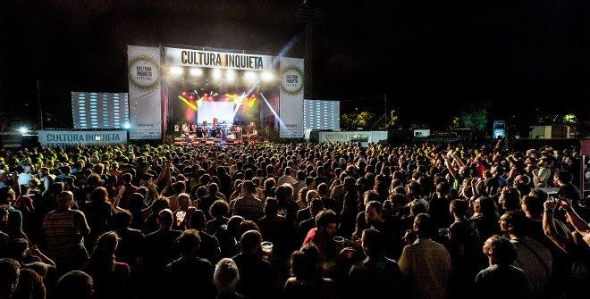
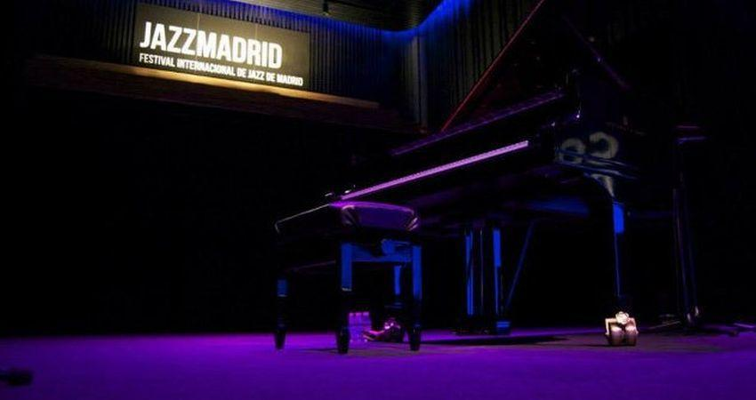

Jazz Madrid regresa a la capital de España en su décima edición y lo hace apostando, por tercer año consecutivo, por el jazz más clásico y el más avanzado, con artistas veteranos y emergentes. El festival vuelve a dejar constancia de la incontestable capitalidad artística que en los últimos tiempos ha ganado para Madrid este vistoso encuentro musical, en competencia directa con el resto de citas análogas que tienen lugar en España.
Del 8 de octubre al 30 de noviembre, Madrid se vuelve a convertir en el epicentro europeo de este género musical con 70 conciertos en la programación oficial y una agenda de más de 200 eventos que reúnen a las figuras imprescindibles del panorama actual. En esta edición, los lugares escogidos para la celebración de los conciertos y eventos serán el Teatro Fernán Gómez. Centro Cultural de la Villa, CentroCentro y Centro Cultural Condeduque y en los auditorios y salas programados por Villanos del Jazz.
La programación de 2023 es nuevamente una combinación perfecta de grandes nombres, jazz clásico, jazz contemporáneo, músicos que trabajan en los márgenes del jazz buscando nuevas fórmulas y artistas que adecuan sus ritmos étnicos a la música del jazz.
La oferta, como en anteriores ocasiones, es eminentemente plural y su objetivo prioritario vuelve a desarrollar un cartel que, por volumen y contenidos, continúa situando a Madrid en el mapa de los mejores festivales de jazz europeos. Un festival de ciudad y para la ciudad cuyo desarrollo volverá a producirse en diferentes espacios escénicos de Madrid, si bien sus centros neurálgicos seguirán siendo los mismos que lo han sido durante los años anteriores, que tan bien han funcionado.
Aunque no esté clasificado como uno de los recintos que albergarán el festival, la Cineteca de Madrid también contará con una labor especial dentro del proyecto, pues será el lugar donde se proyectarán El hombre del brazo de oro y En el centro de la tormenta, así como en el Teatro Pavón, La Riviera y los Teatros del Canal. Este apartado contará con la colaboración en algunas de sus citas de AIE En Ruta Jazz, la Embajada de los Países Bajos y el Festival de Jazz de Zaragoza.
De forma paralela a Jazz Madrid, se desarrollarán el Festival de Jazz Ciudad Lineal, Jazz en los distritos y Jazz con Sabor a Club.
Entre las grandes figuras que acudirán al festival, el público podrá disfrutar de Ron Carter (uno de los artistas más grandes del festival que despide gira), Mike Stern, Billy Cobham, Patricia Barber, Ralph Towner, Bebel Gilberto, Charles Lloyd o Tigran Hamasyan.
En las voces emergentes encontrarán a Samara Joy o Madison McFerrin y nombres ya consagrados como Stacy Kent y Cécile McLorin; se podrán descubrir figuras jóvenes en las orillas del jazz como Alpha Mist o Kaki King o los ritmos exóticos de Rabih Abou Khalil, Azymuth (por primera vez en España), Fatoumata Diawara, Mayra Andrade o Mulatu Astatke.
Y, por supuesto, no faltarán algunos nombres consagrados y también nueva savia proveniente del panorama español como Pepe Rivero y Ángela Cervantes, el saxofonista Juan Saiz, el pianista Moisés P. Sánchez, la saxofonista Irene Reig, la baterista Eva Catalá o la trompetista y cantante Andrea Motis, que presentará en exclusiva en Madrid su nuevo disco, junto a los componentes de la Camerata del Conservatori del Liceu.
Villanos del Jazz -que, por tercer año consecutivo, forma parte de la programación oficial de Jazz Madrid, alianza estratégica que supone el espaldarazo definitivo para convertir este festival en uno de los de mayor calado de España y Europa por la calidad y cantidad de su oferta- serán los encargados de iniciar la andadura de esta edición el 8 de octubre con Immanuel Wilkins en la Sala Villanos.
En su cartel figuran nombres tan atractivos como Bebel Gilberto, Corinne Bailey Rae, TheCookers, Alfredo Rodríguez, Birélli Lagrène, Tigran Hamasyan, Ibrahim Maalouf, Azymuth, DhaferYoussef, Antonio Lizana, Jose James, Billy Cobham, Mark Guiliana, Harold López-Nussa o Benny Sings.
Otra de las sorpresas que el cartel reserva es la continuidad de la oferta de conciertos de blues en el festival. Este estilo musical tiene esta vez un protagonista de excepción en la figura de Elliott Sharp. También destaca la presencia de la guitarrista británica Kaki King y de la cantante caboverdiana Mayra Andrade, quien para algunos es la sucesora de Cesária Évora.
El programa incluye en su programación una destacada presencia femenina, en la que destacan las actuaciones de Cyrille Aimée, Bebel Gilberto y Corine Bailey Rae, Cécile McLorin Salvant, Andrea Motis, Patricia Barber o Ángela Cervantes, y la de grandes formaciones como la Big Band de Arturo Soria y el Creativa Grand Ensemble, ambas integradas por músicos procedentes de las aulas, respectivamente, del Conservatorio de Arturo Soria y de la Escuela de Música Creativa; la Soler Jazz Band del Centro Integrado de Música Padre Antonio Soler, de San Lorenzo de El Escorial; el proyecto ganador de la Residencia de Jazz de Condeduque, con la baterista Eva Catalá como protagonista, y las dos propuestas de la AIE: Irene Reig y Juan Saiz.
Otra de las características que adornan la línea de programación de Jazz Madrid es su eclecticismo. Esto se hace evidente en los conciertos que protagonizarán el productor y compositor británico Alfa Mist, las ya mencionadas cantantes Andrade y Samara Joy (ganadora de un reciente premio Grammy), el Rembrandt Trio, procedente de Países Bajos, y el guitarrista y pianista Ralph Towner.
Y aún queda espacio en el programa para que algunos creadores, pertenecientes a ese modelo de jazz que viste de libertad sonora la música popular de cualquier rincón del planeta, expresen sus más recientes inquietudes. Brinda una ocasión única para comprobar la calidad de las evocaciones árabes que adornan la música del grupo del laudista libanés Rabih Abou Khalil, las africanas del multiinstrumentista etíope Mulatu Astatke o las caribeñas del pianista cubano Pepe Rivero, que acompañará en orden de dúo a la cantante Ángela Cervantes.
Finalmente, y a modo de declaración de principios, la sección oficial del festival cerrará sus actividades en Fernán Gómez con un gran concierto protagonizado por la trompetista y cantante Andrea Motis, a la que se le ha ofrecido carta blanca para que sea ella misma la que conforme la orquesta que considere más oportuna para desarrollar una actuación en la que presentará su producción discográfica más reciente. Una espléndida conclusión con una de las artistas que mayor y más sólida proyección internacional tiene en estos momentos.
Las entradas para los conciertos de la programación oficial de Jazz Madrid 23 se pueden adquirir en la web www.festivaldejazzmadrid.com. También las entradas de Villanos del Jazz están ya a la venta aqui.